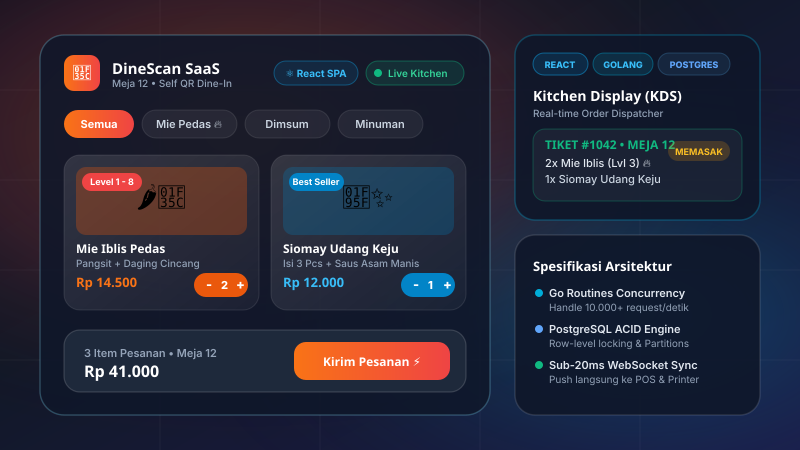

SaaS Platform
React
DineScan SaaS — QR Dine-In Ordering & Kitchen POS
Platform SaaS sistem pemesanan mandiri meja restoran (Scan-to-Order) ala ritel modern seperti alur layanan Mie Gacoan. Frontend dibangun dengan React dan Tailwind CSS, dasbor antrean dapur KDS, ditenagai backend Golang berkonkurensi tinggi & basis data PostgreSQL untuk sinkronisasi pesanan real-time via WebSockets.
React
Golang (Go)
PostgreSQL
WebSockets
Tailwind
Lihat Proyek